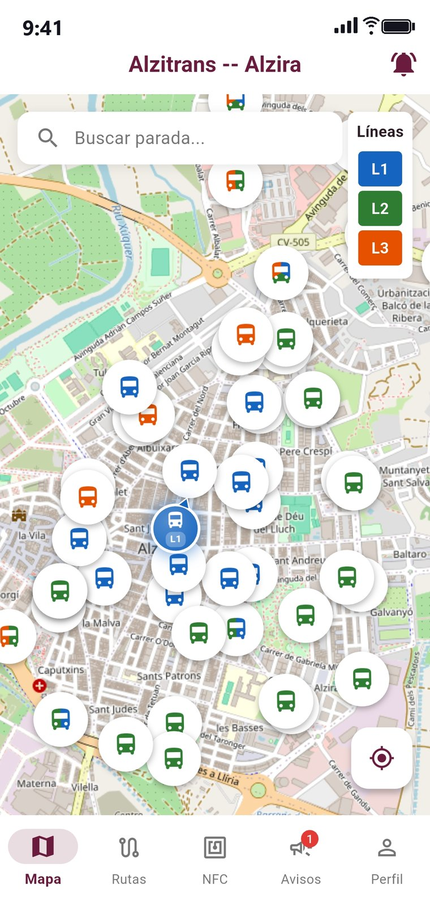
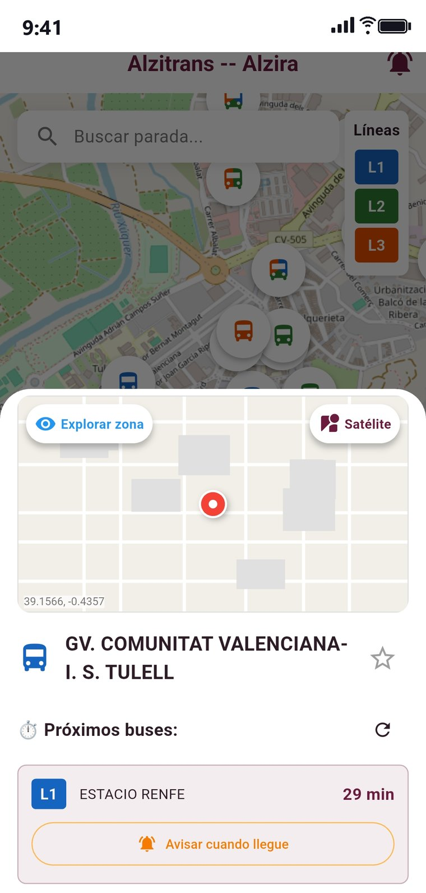
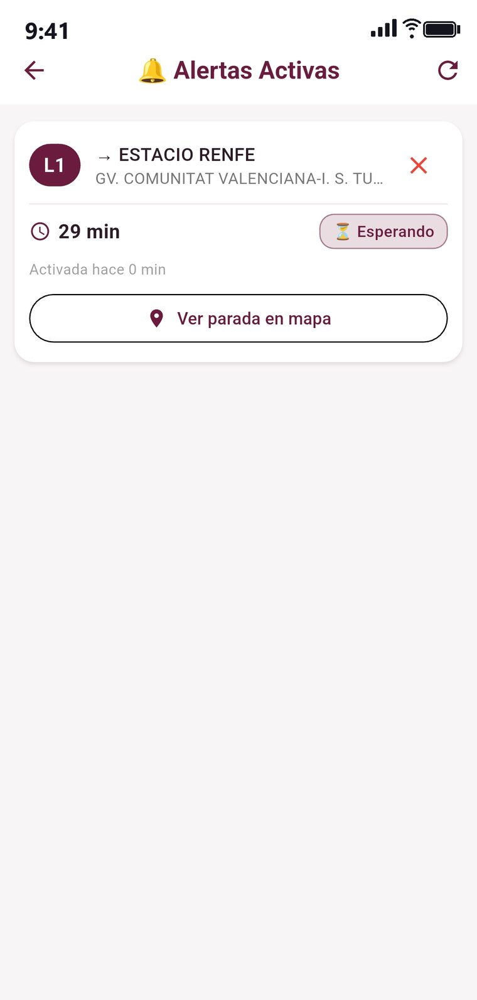
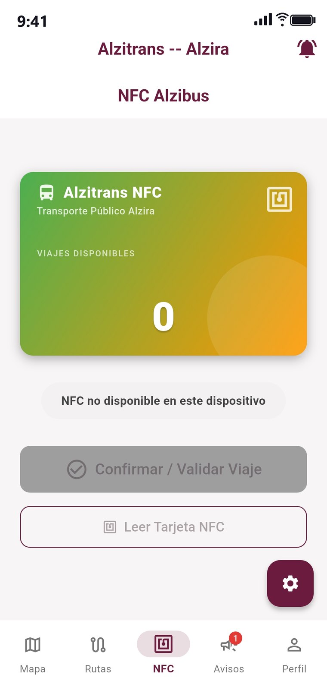
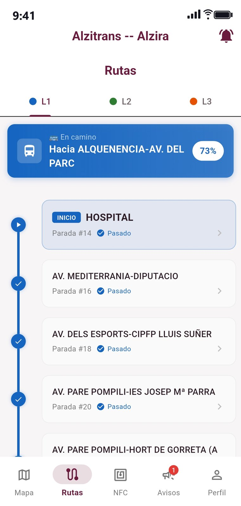
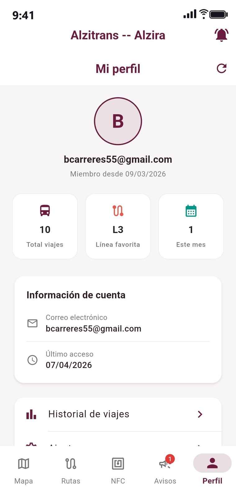
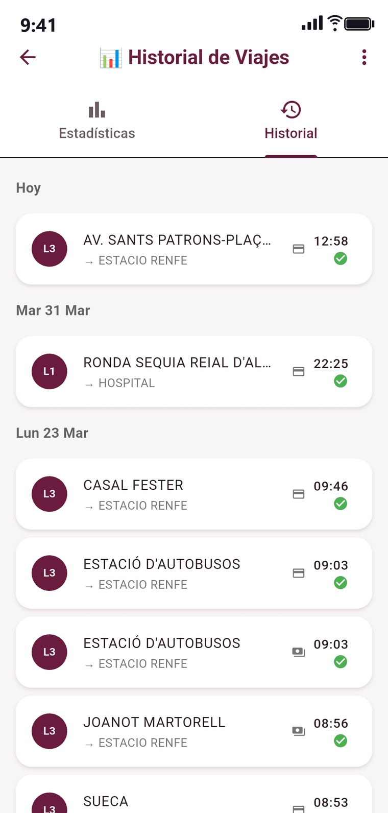
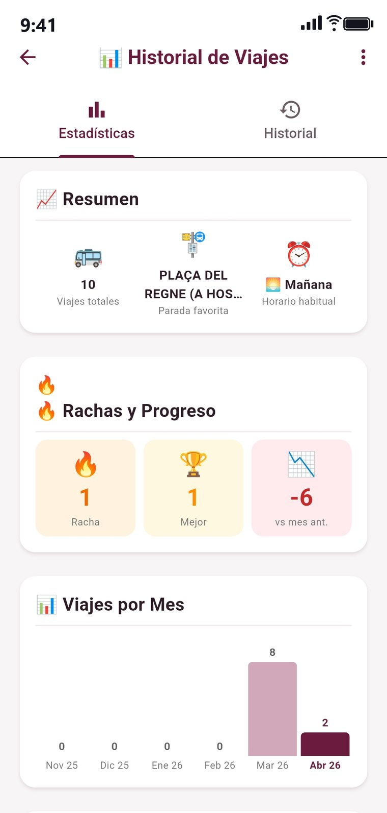
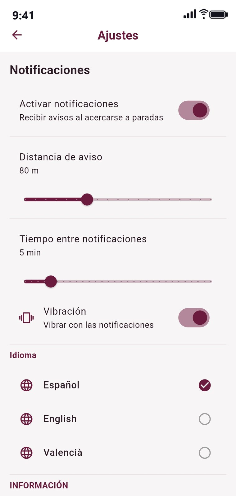

Transporte Urbano y Bus Alzira
Consulta los horarios del bus en Alzira, tiempos de llegada reales de las líneas L1, L2 y L3, y todas las paradas del servicio de autobuses urbanos. Recibe alertas y lee tu tarjeta de transporte con el móvil.

Alzitrans —la app que muchos buscan como Alzibus— está diseñada para mejorar la experiencia de quienes usan diariamente el autobús urbano de Alzira. Ya sea que necesites desplazarte por el centro, acudir al Hospital de la Ribera, llegar al instituto o conectarte con otras zonas como Carcaixent, aquí encontrarás los horarios del bus en Alzira, los recorridos exactos y la información en directo de las líneas L1 Alzira, L2 Alzira y L3 Alzira. Olvídate de esperar en la parada sin saber cuándo llegará tu transporte.
Alzitrans integra todas las herramientas del transporte público en una sola app, con un diseño moderno y fácil de usar.
Visualiza el mapa de Alzira con todas las paradas y líneas de autobús. Toca cualquier parada para ver los tiempos exactos de llegada actualizados segundo a segundo.

Activa una alerta para cualquier línea y parada. Alzitrans te enviará una notificación cuando el bus esté a 5, 2 o 1 minuto de llegar. Nunca más correrás para coger el bus.

Acerca tu tarjeta de transporte al móvil y lee al instante tu saldo y los últimos viajes realizados. Compatible con tarjetas MIFARE Classic 1K del servicio de bus de Alzira.

Consulta el recorrido completo de los autobuses urbanos (L1, L2 y L3) con todas sus paradas, horarios de bus en Alzira y destinos. Planifica tu viaje paso a paso.

Guarda tus paradas más frecuentes con un solo toque. Accede a los tiempos de llegada de tu parada habitual sin tener que buscarla cada vez que abres la app.

Alzitrans guarda automáticamente cada viaje que realizas. Consulta cuándo y dónde cogiste el bus, qué línea usaste y cuántos viajes llevas este mes.

Un espacio exclusivo donde ver tus datos: total de viajes, paradas visitadas, línea favorita y mucho más. Un diseño limpio y funcional que te cuenta tu historia con el bus.

Alzitrans está disponible en Español, Valenciano e Inglés. Cambia el idioma desde los ajustes de la app y toda la interfaz se adapta inmediatamente.

Unirse es gratis y solo te llevará 30 segundos. Sigue estos pasos:
Busca "Alzitrans" en Google Play o usa los enlaces de esta web para instalarla en tu Android.
Abre la app y crea tu cuenta con tu email. No pedimos datos innecesarios.
Introduce el código OTP que te enviaremos por correo para asegurar que tu cuenta está protegida.
Ya puedes consultar tiempos reales, guardar favoritas y leer tu tarjeta NFC.
Información detallada de las 3 líneas y las 52 paradas del autobús urbano de Alzira.
Todo lo que necesitas saber sobre el bus de Alzira y sobre Alzitrans.
Con Alzitrans puedes ver los tiempos de llegada del bus de Alzira en tiempo real. Selecciona tu parada en el mapa y verás al instante cuántos minutos faltan para las líneas L1, L2 y L3.
El transporte urbano de Alzira tiene tres líneas: L1, L2 y L3. Puedes ver el recorrido completo, todas las paradas y los horarios en la app.
Sí, Alzitrans es 100% gratuita. Disponible para Android en Google Play, sin coste ni suscripciones.
Sí. Alzitrans incluye un lector NFC integrado. Solo tienes que acercar tu tarjeta de transporte de Alzira al móvil para ver tu saldo y el historial de viajes al instante.
Puedes descargar Alzitrans gratis en Google Play Store buscando "Alzitrans".
¿Tienes dudas, sugerencias o quieres colaborar con la mejora del transporte en Alzira? Estamos encantados de escucharte.
bcarreres55@gmail.com
+34 633 90 84 73
Alzira, Valencia
Descubre los horarios en tiempo real. Descarga la app para Android o usa nuestra Web App en iOS.